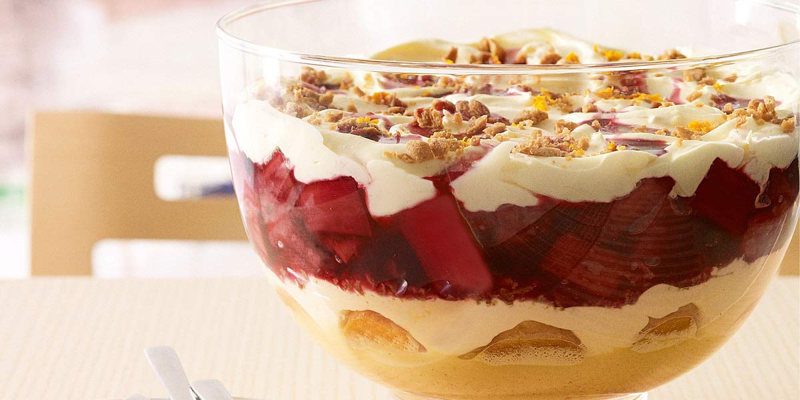

Trifle
Recipe Specification
Ingredients List
| Ingredients | Quantity |
|---|---|
| Frozen Fruits of the Forrest | 500g |
| Caster Sugar | 60g |
| Créme de Cassis | 30ml |
| Apple Juice | 500ml |
| Gelatine Sheets | 5 |
| Madeira Cake | 250g |
| Mascarpone Cheese | 250g |
| Vanilla Custard | 500ml |
| Double Cream | 300ml |
| Dark Chocolate | 50g |
Yield: 10-12 portions
Preparation
- Soak gelatine sheets in cold water.
- Cut madeira cake into 1 inch cubes.
- Whisk mascarpone cheese with vanilla custard.
- Whisk double cream to a medium stiffness and transfer to a piping bag with a star nozzle. Set aside in the fridge for later.
Cooking Instructions
- Place sauce pan on a medium/high heat and add fruits of the forest and caster sugar. Allow the sugar to dissolve before placing half fruit in a bowl and leaving the remaining half in the sauce pan.
- Add half the créme de cassis to the fruit mixture in the bowl and allow to cool to room temperature.
- Add apple juice to the sauce pan, return pan to the heat and bring to the boil before reducing to the simmer. Taste for sweetness and adjust accordingly by adding more sugar. Pour the remaining créme de cassis into the sauce pan and remove pan from the heat.
- Squeeze the gelatine sheets of any excess water and stir into saucepan until completely dissolved. Place mixture in a bowl and allow to come to room temperature before placing in the fridge for 2 hours.
- Compile the trifle by putting cubed madeira cake at the bottom of a glass display bowl. Apply the fruit mixture evenly to the top of the cake and add the jelly mixture to the top of that. Then apply the custard mixture to the top of this ensuring an even layer. Pipe whipped double cream to the top of the custard in concentric circles, from outside to in, ensuring peaks are the same height. Finally grate dark chocolate on top of the cream.

Storing instructions
Cover with clingfilm before placing in the fridge. Consume with 4 days of making.